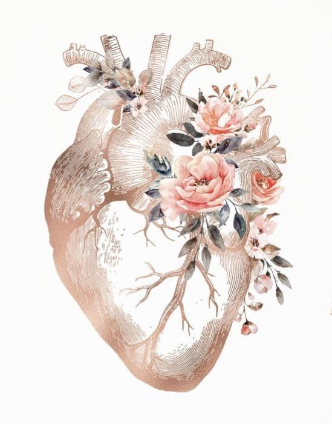

COACH ONTOLOGICO
Desde el coach ontologico te acompañamos a desarrollar tu potencial y alcanzar objetivos, a traves de una conversacion transformadora que se basa en el lenguaje y el ser. Partimos de la premisa de que el lenguaje no solo describe la realidad, sino que tambien la crea; y el ser esta en constante evolucion y aprendizaje. Explorando creencias, emociones, acciones y resultados, generando nuevas posibiidades de cambio y crecimiento personal y profesional.
Ademas de alcanzar objetivos y apuntar al crecimiento personal, mejora tus relaciones personales y profesionales, cambia tus creencias limitantes, mejora el autoconocimiento y aumenta tu autoconfianza. Permitiendo tomar acciones mas acertadas, y vivir de acuerdo a tus valores; ademas, al enseñarte a comunicarte de manera mas efectiva, expesandote de manera mas clara y entendiendo las necesidades de los demas.
Una sesion de coaching es una conversacion, en la que el coach te acompaña a explorar la forma de ver al mundo y de actuar en él, con el fin de transformar esas creencias que no permiten ver las oportunidades que en realidad somos. Vamos a establacer un acuerdo, te hare preguntas, porque las respuestas estan dentro de ti, y necesitamos encontrar el "para que" de aquello que no te permite avanzar. Vamos a trabajar juntos en eso que te inquieta...